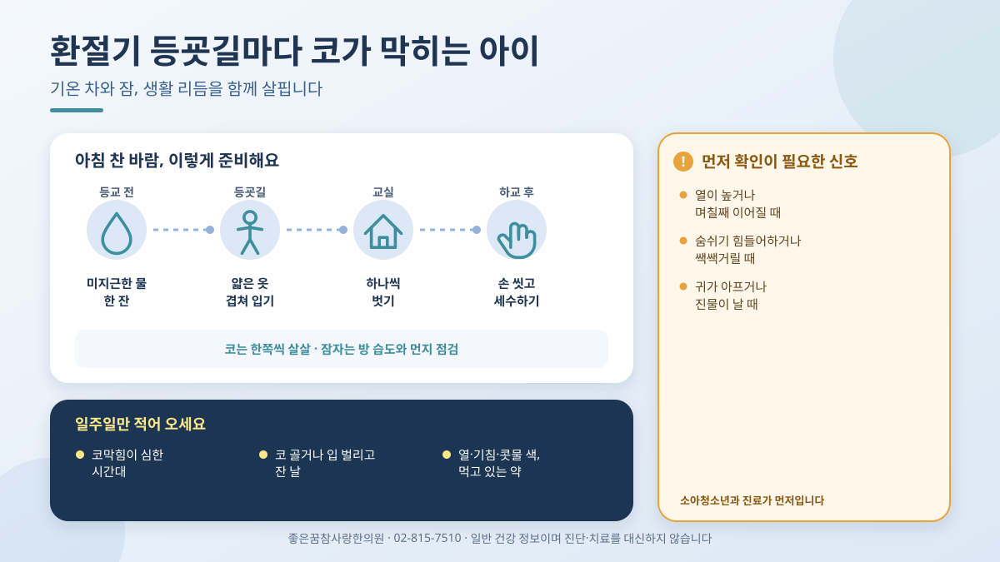

이종호 한의사 감수좋은꿈참사랑한의원 대표원장 (한의사 면허번호 19769)발행 2026-11-24 · 수정 2026-11-26
이 글의 차례
- 왜 이런 불편이 생길 수 있나요
- 감기와 찬 공기에 예민한 코는 다른 얘기예요
- 왜 어떤 아이는 환절기마다 더 힘들어할까요?
- 코막힘과 비슷한 경우는 어떻게 구분하나요?
- 코가 막히면 왜 밤잠과 낮 집중까지 흔들릴까요?
- 자주 하는 오해
- 예를 들면 이런 경우입니다
- 먼저 이렇게 여쭙니다
- 스스로 점검해 보세요
- 일상에서 먼저 해 볼 수 있는 것
- 보호자께 드리는 부탁
- 등교하는 아침, 이렇게 해 보세요
- 교실과 학원에서는 이렇게 챙겨 주세요
- 아이 방은 이렇게 살펴보세요
- 얼마나 지켜보고, 언제 바로 확인할까요
- 한의원에서 함께 살필 수 있는 경우
- 이렇게 기록해 오시면 상담이 쉬워집니다
- 이런 증상은 먼저 확인이 필요합니다
- 함께 읽으면 좋은 글
가을이 되면 아침에는 쌀쌀하고 낮에는 더운 날이 이어집니다. 등굣길에 찬 바람을 맞은 아이가 교실에 도착하자마자 코를 훌쩍이고, 수업 시간에도 코가 막혀 입으로 숨을 쉰다는 이야기를 부모님께 자주 듣습니다. 밤잠까지 흔들리기 전에 아침 습관부터 살펴보는 것이 좋습니다.
진료실에서 보호자께 자주 듣는 말이 있어요. "원장님, 집에서는 멀쩡한데 학교만 가면 훌쩍거린대요." 원래 그런 경우가 많아요. 따뜻한 집에서 나와 찬 공기를 맞고, 다시 사람 많은 교실로 들어가는 그 사이에 아이 코가 바빠지는 거예요. 겁내실 일은 아니고, 아침 몇 가지를 손보면서 지켜볼 수 있는 경우가 많아요.
왜 이런 불편이 생길 수 있나요
- 아침저녁 기온 차가 크면 찬 공기에 코 점막이 예민하게 반응해 콧물과 코막힘이 생길 수 있습니다.
- 낮에 덥다고 얇게 입혔다가 아침 찬 바람을 그대로 맞는 경우가 많습니다.
- 교실은 사람이 많아 건조하고 먼지가 많아질 수 있습니다.
- 코가 막혀 입으로 숨 쉬고 자면 잠이 얕아지고 아침에 목이 마를 수 있습니다.
감기와 찬 공기에 예민한 코는 다른 얘기예요
여기서 두 가지를 나눠서 보셔야 해요. 감기로 생긴 코막힘과, 찬 공기에 코가 예민하게 반응하는 것은 다른 얘기예요. 감기는 대개 목이 아프거나 열이 나고 며칠 앓다가 지나가요. 반면 찬 공기에 예민한 코는 열은 없는데 아침저녁 기온이 바뀔 때마다 맑은 콧물과 재채기, 코막힘이 되풀이되는 경우가 많아요.
왜 아침에 더 심할까요? 코는 들이마신 공기를 데우고 촉촉하게 만드는 일을 해요. 찬 공기가 갑자기 들어오면 코 안 점막이 그 일을 하느라 부풀고 콧물을 더 만들어요. 그래서 등굣길 찬 바람을 맞은 직후에 훌쩍임이 가장 심하다가, 교실에서 몸이 데워지면 조금 덜해지는 모양이 많은 거예요.
왜 어떤 아이는 환절기마다 더 힘들어할까요?
같은 반 같은 등굣길인데 유독 우리 아이만 훌쩍인다는 말씀도 자주 하세요. 아이마다 타고난 몸이 달라서 그래요. 손발이 쉽게 차고, 입이 짧고, 조금만 놀아도 쉽게 지치는 아이는 계절이 바뀔 때 몸이 적응하는 데 시간이 더 걸리는 경우가 많아요.
한의학에서는 코를 코 하나로만 보지 않고 아이 몸 전체의 기운, 특히 먹고 소화하는 힘과 이어서 봐요. 잘 먹고 잘 자는 아이가 계절도 덜 타는 경우가 많거든요. 그래서 코가 자주 막히는 아이라면 입맛과 배변, 잠을 같이 살피면서 몸 전체가 버티는 힘을 키우는 쪽을 함께 생각해요.
그렇다고 체질이니 어쩔 수 없다는 건 아니에요. 옷차림과 잠, 아침 식사처럼 손볼 수 있는 것부터 하나씩 챙기면 같은 환절기도 조금 덜 힘들게 지나가는 경우가 많아요.
코막힘과 비슷한 경우는 어떻게 구분하나요?
- 재채기가 잦고 눈이 가렵고 맑은 콧물이 줄줄 흐르면서 계절마다 되풀이된다면 알레르기 쪽 반응이 섞였는지 살펴봐요.
- 누런 콧물이 열흘 넘게 이어지고 이마나 볼 쪽이 묵직하다고 하면 코 옆 빈 공간에 염증이 생겼는지 이비인후과나 소아청소년과 확인이 필요해요.
- 감기가 아닌데도 일 년 내내 코를 골고 입으로 숨을 쉰다면 코 뒤쪽 편도 같은 구조의 문제가 없는지 진료를 받아 보시는 게 좋아요.
- 한쪽 코만 계속 막히고 냄새 나는 콧물이 나온다면 코 안에 무언가 들어갔는지 확인이 필요할 수 있어요.
이런 경우가 아니고 환절기 아침에만 유독 심하다면, 옷차림과 아침 습관, 방 환경을 함께 손보면서 지켜보는 경우가 많아요.
코가 막히면 왜 밤잠과 낮 집중까지 흔들릴까요?
코가 막히면 아이는 자면서 입으로 숨을 쉬게 돼요. 입으로 숨 쉬면 목이 마르고, 숨이 고르지 않아 자주 뒤척이면서 잠이 얕아지죠. 아이는 깊이 못 잤다는 걸 말로 잘 표현하지 못해서, 다음 날 아침 짜증이나 입맛 없음, 수업 시간 멍함으로 드러나는 경우가 많아요.
그래서 저는 코 이야기로 오셔도 아이의 잠과 아침 식사, 학교에서의 모습을 꼭 같이 여쭤봐요. 코와 잠과 소화는 따로 떨어져 있지 않거든요. 코만 보는 게 아니라 아이 몸 전체를 보려는 거예요.
자주 하는 오해
- 코를 훌쩍이는 것은 감기라서 금방 지나간다고 여기기 쉽지만, 환절기마다 반복되거나 밤잠까지 흔들린다면 생활 습관을 함께 살펴보는 편이 좋습니다.
- 아이가 춥다고 하지 않으니 얇게 입혀도 괜찮다고 생각하기 쉽지만, 아이는 추위를 늦게 말하는 경우가 많습니다.
- 코를 세게 풀어야 시원해진다고 여기기 쉽지만, 양쪽을 한꺼번에 세게 풀면 귀가 먹먹해질 수 있어 한쪽씩 살살 푸는 편이 좋습니다.
- 가습기를 하루 종일 세게 틀수록 좋다고 생각하는 분도 있지만, 너무 습하면 곰팡이와 먼지 진드기가 늘 수 있어 적당한 정도를 지키는 편이 좋습니다.
예를 들면 이런 경우입니다
- 예를 들어 언덕길을 15분쯤 걸어 등교하는 초등학생이라면, 얇은 겉옷을 하나 더 입혀 보내고 교실에 도착하면 벗어 가방에 넣도록 미리 약속해 두면 아침 찬 바람과 낮 더위를 함께 맞출 수 있습니다.
- 예를 들어 학원까지 마치고 밤늦게 귀가하는 고학년 아이라면, 저녁 찬 공기를 맞는 시간도 길어지니 목도리나 마스크를 챙기고, 잠자리에 드는 시각이 너무 늦어지지 않게 함께 정해 봅니다.
- 예를 들어 코가 막혀 아침마다 밥을 몇 숟가락 못 뜨고 나가는 아이라면, 따뜻한 국이나 미지근한 물을 먼저 마시게 하고 잠깐 기다렸다가 식사를 시작해 봅니다.
먼저 이렇게 여쭙니다
- 코막힘과 콧물은 등교할 때 가장 심한가요, 하루 종일인가요?
- 아침에 어떤 옷을 입고 등교하나요?
- 밤에 코를 골거나 입을 벌리고 자나요?
- 열이나 누런 콧물이 함께 있나요?
스스로 점검해 보세요
- 등교할 때 낮 기온에 맞춘 얇은 옷만 입는다
- 아침에 일어나면 목이 마르거나 입을 벌리고 잔 흔적이 있다
- 밤에 코를 고는 날이 일주일에 사흘 이상이다
- 코를 세게 한꺼번에 푸는 습관이 있다
- 환절기마다 비슷한 증상이 되풀이된다
- 코막힘이 심한 날 아침밥을 잘 먹지 못한다
- 수업 시간에 집중이 어렵다는 이야기를 들었다
해당하는 항목이 여럿이라면 진료 때 말씀해 주시면 상담이 쉬워집니다.
일상에서 먼저 해 볼 수 있는 것
- 아침에는 얇은 옷을 겹쳐 입히고 교실에서 하나씩 벗게 하기
- 등교 전에 미지근한 물 한 잔 마시기
- 코는 한쪽씩 살살 풀도록 알려 주기
- 학교에서 돌아오면 손 씻고 세수하기
- 잠자는 방의 습도와 먼지를 한 번 점검하기
등교 전에 아이와 함께 오늘 아침 기온을 확인하고 겉옷을 고르는 습관을 들이면, 아이 스스로 옷을 챙기는 연습도 됩니다. 저녁에는 잠들기 한 시간 전부터 화면을 끄고 방을 어둡게 해 잠자리에 드는 시각을 일정하게 지켜 보세요. 코가 막혀 잠을 설친 날은 다음 날 아침 기록에 한 줄 남겨 두면 진료 때 도움이 됩니다.
숙제는 하나만 드릴게요. 등교할 때 얇은 겉옷 하나만 더 입혀 보내 주세요. 딴 건 하던 대로 하셔도 돼요. 교실에서 벗어 가방에 넣으면 되니까 아이도 크게 불편해하지 않아요.
보호자께 드리는 부탁
- 코를 훌쩍인다고 혼내기보다 휴지를 챙겨 주고 한쪽씩 푸는 법을 알려 주세요.
- 아이가 코 때문에 잠을 설친 날은 아침에 조금 더 여유를 두고 따뜻한 물부터 마시게 해 주세요.
- 아이가 먹고 있는 약이 있다면 이름을 적어 두었다가 진료 때 알려 주세요.
- 학교 선생님께 코가 자주 막혀 화장실이나 휴지가 필요할 수 있다고 미리 말씀해 두셔도 좋아요.
아이는 불편해도 참거나 말하지 않는 경우가 많아요. 보호자가 아침저녁 아이 모습을 한 번씩 봐 주시는 것만으로도 큰 도움이 돼요.
저녁 습관도 아침 코에 영향을 줘요. 잠들기 직전까지 화면을 보거나 늦게 자면 잠이 얕아지고, 얕게 잔 아이는 아침에 몸이 덜 데워진 채로 찬 공기를 맞게 돼요. 저녁 식사는 너무 늦지 않게, 잠자리에 드는 시각은 주말에도 크게 흔들리지 않게 지켜 주세요. 자기 전 따뜻한 물로 씻기면 코가 한결 뚫린 상태로 잠드는 아이들이 많아요.
등교하는 아침, 이렇게 해 보세요
아침은 늘 바쁘죠. 그래서 순서를 정해 두면 덜 허둥대요. 다 하실 필요는 없고 할 수 있는 것만 골라 보세요.
- 일어나면 커튼을 열고 미지근한 물 한 잔 마시기
- 세수할 때 따뜻한 물로 코 주변을 데우고, 코는 한쪽씩 살살 풀기
- 아침밥은 따뜻한 국이나 미지근한 음식으로 몇 숟가락이라도 먹기
- 현관 앞에서 그날 기온을 같이 보고 겉옷 고르기
- 바람이 찬 날은 목도리나 마스크로 코와 입을 살짝 가리고 나가기
찬 공기를 갑자기 들이마시지 않게 코와 입을 살짝 가리는 것만으로도 등굣길 훌쩍임이 덜하다는 아이들이 있어요.
교실과 학원에서는 이렇게 챙겨 주세요
교실은 사람이 많아 공기가 건조하고 먼지가 많아지기 쉬워요. 개인 물병을 챙겨 보내 쉬는 시간마다 물을 몇 모금씩 마시게 해 주세요. 코가 마르면 더 막히고 간지러워서 자꾸 후비게 되거든요.
창가 자리나 에어컨, 히터 바람이 바로 오는 자리라면 코가 더 예민해질 수 있어요. 아이가 불편해한다면 담임 선생님께 상의해 보셔도 좋아요. 학원에서 늦게 돌아오는 날은 저녁 찬 공기도 맞으니 겉옷을 꼭 챙겨 주세요.
아이 방은 이렇게 살펴보세요
자는 방이 너무 건조하면 코가 마르고, 너무 습하면 곰팡이와 먼지 진드기가 늘기 쉬워요. 가습기는 적당히, 그리고 자주 씻어서 쓰는 게 좋아요. 이불과 베개는 자주 털고 햇볕에 말려 주시고, 인형이 많다면 침대 위에서는 조금 덜어 내 보세요.
얼마나 지켜보고, 언제 바로 확인할까요
열이 없고 아이가 평소처럼 놀고 먹는다면 옷차림과 방 습도, 잠자리 습관을 바꾸면서 1~2주쯤 지켜보세요. 그래도 코막힘과 훌쩍임이 계속되거나 밤잠이 흔들리고, 환절기마다 같은 일이 되풀이된다면 진료로 함께 살펴보시길 권합니다. 누런 콧물이 열흘 넘게 이어질 때도 소아청소년과나 이비인후과에서 확인받아 보세요.
한의원에서 함께 살필 수 있는 경우
- 환절기마다 코막힘과 콧물이 반복되는 경우, 잠과 생활 리듬을 함께 살핍니다.
- 코가 막혀 입으로 숨 쉬고 자는 경우, 잠의 상태를 함께 여쭙습니다.
- 입맛이 없고 쉽게 지치는 경우, 식사와 기운을 함께 살핍니다.
좋은꿈참사랑한의원에서는 아이가 무서워하지 않도록 천천히 설명하며 이야기를 듣고, 진맥을 기본으로 하고 필요하다고 판단될 때 설진을 더해 몸 상태를 살핀 뒤 아이 나이에 맞는 방법을 보호자와 함께 정합니다. 귀가 전에는 등교 아침에 해 볼 일을 알려 드립니다.
처음 오시면 데스크에서 기본 정보를 적습니다. 원장은 아이가 무서워하지 않게 먼저 설명한 뒤 맥을 짚으면서, 보호자께 증상이 심한 시간대와 옷차림, 밤잠, 입맛과 배변, 아이가 먹고 있는 약과 최근 받은 진료를 여쭙습니다.
아이에게도 직접 불편한 점을 천천히 묻고, 필요하다고 판단될 때 설진을 더합니다. 아이 나이에 맞는 방법과 이유를 보호자와 아이에게 먼저 설명해 드리고, 아이가 무서워하면 억지로 진행하지 않습니다.
한약을 생각할 때는 아이가 먹고 있는 약과 최근 받은 진료를 먼저 확인하고, 아이 나이와 몸 상태에 맞는지 보호자와 함께 판단해요. 아이가 먹다가 배가 아프거나 불편해하면 복용을 멈추고 연락 주세요. 소아청소년과에서 처방받은 약은 처방한 의사와 상의 없이 줄이거나 끊지 않아요.
이렇게 기록해 오시면 상담이 쉬워집니다
- 일주일 동안 코막힘이 심했던 시간대
- 밤에 코를 골거나 입을 벌리고 잔 날
- 열, 기침, 콧물 색의 변화
- 아이가 먹고 있는 약과 최근 받은 진료
아이가 아직 어리다면 보호자가 아침에 아이의 코 상태를 '괜찮음, 훌쩍임, 막힘' 세 가지 중 하나로 달력에 표시해 두세요. 그날 기온과 입은 옷을 짧게 곁들이면 어떤 날 코막힘이 심해지는지 진료 때 함께 찾아보기 쉽습니다.
이런 증상은 먼저 확인이 필요합니다
- 열이 높거나 며칠째 이어지는 경우, 아이가 축 처지고 물을 거의 못 마시는 경우
- 숨쉬기 힘들어하거나 숨 쉴 때 쌕쌕거리는 경우
이런 신호가 있으면 한의원보다 가까운 병원이나 응급실을 먼저 찾으세요.
함께 읽으면 좋은 글
- 아이가 감기에 자주 걸리고 코가 막힐 때는 어떤 점을 살펴보나요?
- 아이가 자면서 코를 골고 입으로 숨 쉴 때는 어떻게 살피나요?
- 아이 방의 습도와 먼지는 코 막힘과 기침에 어떻게 영향을 주나요?
아이 코는 계절을 타요. 아이도 자라면서 조금씩 계절에 적응해 가는 경우가 많아요. 그 계절을 조금 덜 힘들게 지나가도록 같이 보면 돼요. 궁금한 건 아이와 함께 오셔서 편하게 물어보세요.

여쭙는 것
- 코막힘과 콧물은 등교할 때 가장 심한가요, 하루 종일인가요?
- 아침에 어떤 옷을 입고 등교하나요?
- 밤에 코를 골거나 입을 벌리고 자나요?
생활에서 해 볼 것
- 아침에는 얇은 옷을 겹쳐 입히고 교실에서 하나씩 벗게 하기
- 등교 전에 미지근한 물 한 잔 마시기
- 코는 한쪽씩 살살 풀도록 알려 주기
한의원에서 함께 살필 것
- 환절기마다 코막힘과 콧물이 반복되는 경우, 잠과 생활 리듬을 함께 살핍니다.
- 코가 막혀 입으로 숨 쉬고 자는 경우, 잠의 상태를 함께 여쭙습니다.
- 입맛이 없고 쉽게 지치는 경우, 식사와 기운을 함께 살핍니다.
먼저 확인이 필요한 신호
- 열이 높거나 며칠째 이어지는 경우, 아이가 축 처지고 물을 거의 못 마시는 경우
- 숨쉬기 힘들어하거나 숨 쉴 때 쌕쌕거리는 경우
한눈에 보는 표
| 구분 | 핵심 |
|---|---|
| 여쭙는 것 | 코막힘과 콧물은 등교할 때 가장 심한가요, 하루 종일인가요? 아침에 어떤 옷을 입고 등교하나요? |
| 생활에서 해 볼 것 | 아침에는 얇은 옷을 겹쳐 입히고 교실에서 하나씩 벗게 하기 등교 전에 미지근한 물 한 잔 마시기 |
| 한의원에서 함께 살필 것 | 환절기마다 코막힘과 콧물이 반복되는 경우, 잠과 생활 리듬을 함께 살핍니다. 코가 막혀 입으로 숨 쉬고 자는 경우, 잠의 상태를 함께 여쭙습니다. |
| 먼저 확인이 필요한 신호 | 열이 높거나 며칠째 이어지는 경우, 아이가 축 처지고 물을 거의 못 마시는 경우 숨쉬기 힘들어하거나 숨 쉴 때 쌕쌕거리는 경우 |
자주 묻는 질문
등교 전에 코 세척을 해도 되나요?
아이가 편하게 할 수 있다면 도움이 될 수 있지만, 싫어하면 억지로 하지 않는 것이 좋습니다.
마스크를 쓰게 하는 게 도움이 될까요?
찬 바람이 강한 날에는 도움이 될 수 있습니다. 아이가 답답해하면 목도리로 대신해도 됩니다.
아이가 침을 무서워하는데 괜찮을까요?
아이의 마음을 먼저 듣고 천천히 설명하며, 무서워하면 다른 방법을 함께 찾습니다. 억지로 진행하지 않습니다.
아이가 코를 자꾸 후비는데 괜찮을까요?
코 안이 건조하거나 답답할 때 그럴 수 있습니다. 방 습도를 살피고, 코피가 자주 나면 진료 때 말씀해 주세요.
좋은꿈참사랑한의원은 재진 때 지난번 이야기부터 이어서 여쭙니다. 진료시간과 예약은 오시는 길에서 확인하세요.
어디서 상담받을 수 있나요?
좋은꿈참사랑한의원은 서울 동작구 만양로2길 2 신성빌딩 3층·5층(서울 동작구 상도동, 7호선 상도역 3번 출구 근처)에 있습니다. 한의사 3명(이종호 대표원장, 조영기 수석진료원장, 정원영 진료원장)이 진료합니다. 진료시간은 평일 09:30~20:00(점심 13:00~14:00), 토·일·공휴일 09:30~15:00이며, 방문 전 전화로 확인을 권합니다. 예약은 네이버 예약, 카카오톡 상담, 전화 02-815-7510로 받습니다.
이 글은 일반적인 건강 정보이며 개인의 진단이나 치료를 대신하지 않습니다. 증상이 있거나 복용 중인 약이 있다면 진료를 통해 확인하세요. 치료 효과는 개인마다 다를 수 있습니다.
작성 기준: 일반적으로 알려져 있는 건강 정보를 참고해 정리했습니다(대표원장 감수). 증상 기록은 1~2주 동안 하루 1회, 비슷한 시간에 적어 오시면 지난 상태와 비교하기 쉽습니다.